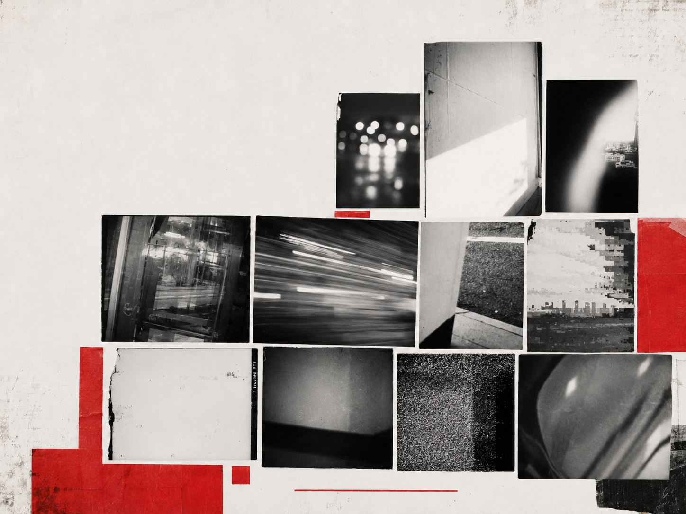
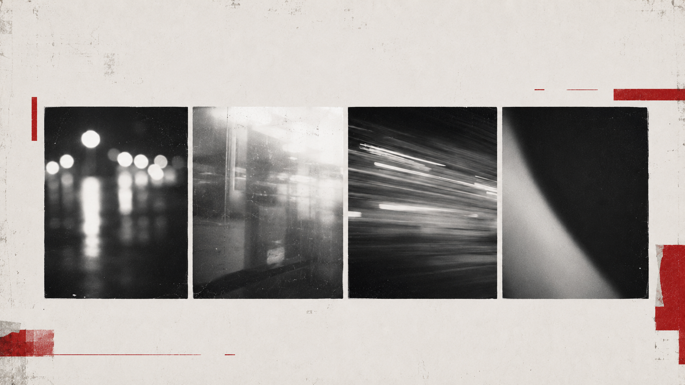
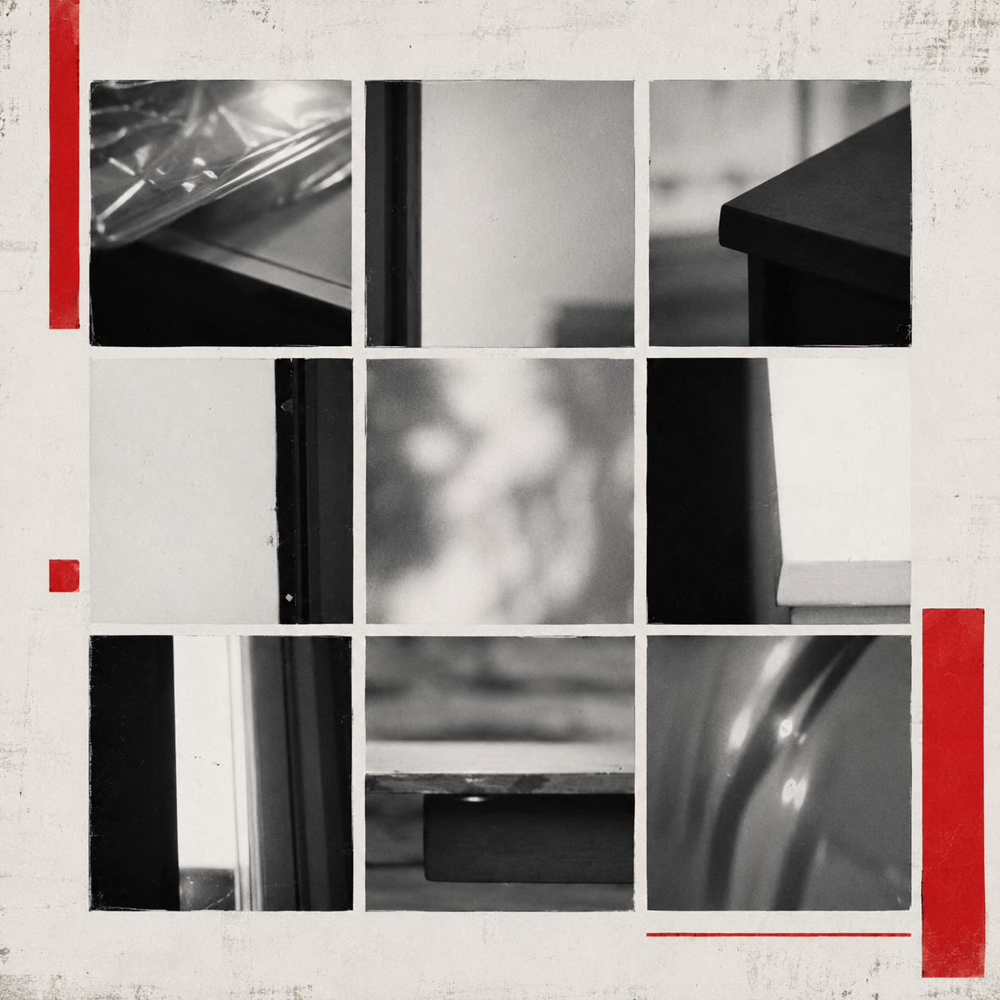
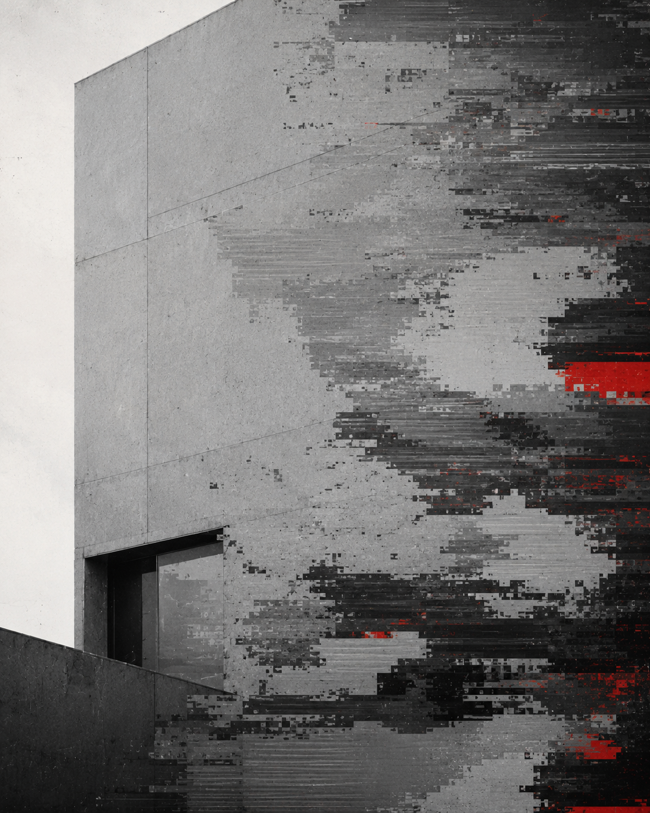
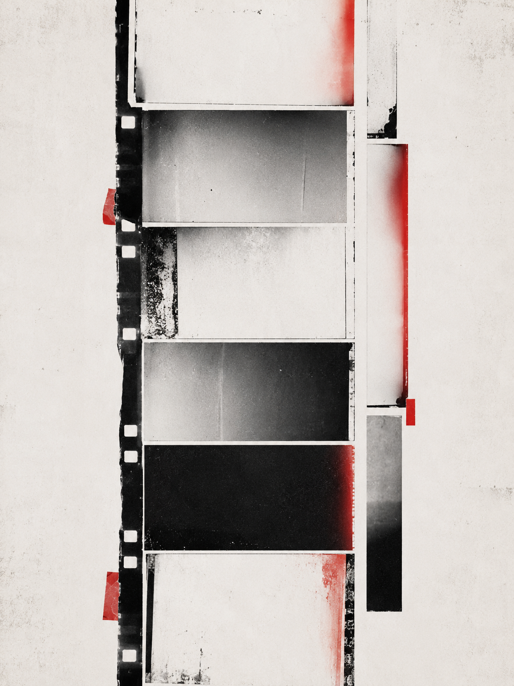

视觉方法 / PROCESS
过程推演展示从原始文件筛选、错误标记到裁切重组的步骤，比较不同编排方式产生的阅读变化。
A06 · IMAGE
偶发档案
将被删除的失败影像重新编排为可检索、可延展的偶然性的档案。

“A06 ARCHIVE OF ACCIDENTS｜偶发档案”收集拍摄与传输过程中产生的失焦、误触、遮挡、反光、压缩错误和裁切偏差，并按照错误类型、画面结构与发生条件进行筛选、编号和重新编排。项目将原本会被删除的失败影像转化为连续图像组、索引页与局部放大样本，使随机缺陷形成可阅读的视觉秩序，并讨论技术失误、观看习惯与图像价值判断之间的关系。
过程推演展示从原始文件筛选、错误标记到裁切重组的步骤，比较不同编排方式产生的阅读变化。
在整理相册时，发现许多被迅速删除的画面并非完全无效。失焦会改变空间层次，遮挡会制造新的边界，压缩错误则留下设备和传输过程的痕迹。



